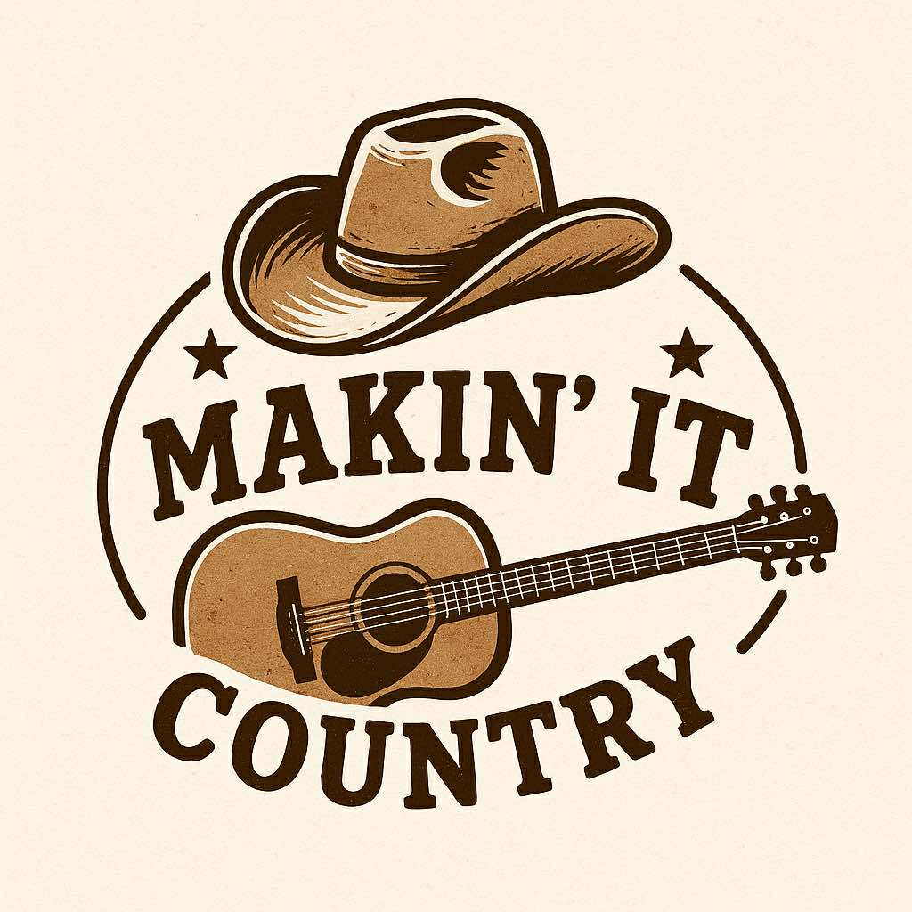

Country • Central Maine

We are a 5-piece country band from central Maine. We perform a variety of country music. We all sing both leads and harmonies. We would love to entertain at your venue or special event.
🎤 Available for gigs
📍 Based in Maine